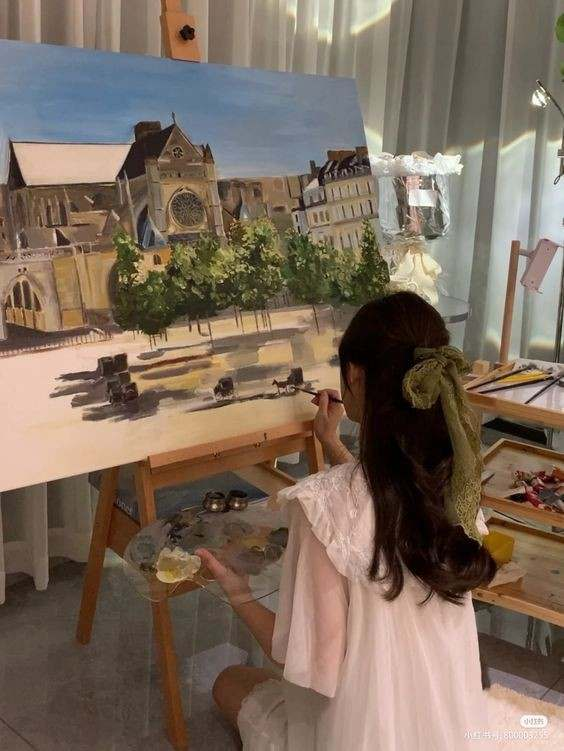

"Transforming emotions into vibrant masterpieces"
Hello! I'm Pascasio, Zarmaine Grace, a future professional painter. This website showcases my journey, skills, and artworks. Explore my portfolio and get to know me better.
I'm Pascasio, Zarmaine Grace, an aspiring painter based in San Jorge, Samar. My work is inspired by my experiences in life, emotions, and nature itself.
My mission is to evoke emotions through my art and challenge perceptions. I aspire to become a professional painter and have my work featured in exhibitions.
Watch the short video clip below about what kind of art I do nowadays:
Additional Information: Menskieee is the name that I use if I'm making art.
My Educational Journey:
My educational journey has involved transferring to every school since I was in elementary school until I started high school. Because of this, I met different people who became my friends and enemies. It's also the reason why the content of my artworks focuses more on experiences—the happy memories and the sad events. But being known to draw, I was inspired to use a pencil or brush to make art because my number one coach who taught me is my father. I love to draw, especially painting. I love to see myself with different paints on my hands and clothes. It satisfies me. It is also my therapy. Even though I didn't have enough achievements to show my talents and because I'm an introvert, being in love with the arts, in college I wanted to study and pursue a program related to the arts. But sad to say, my IQ didn't reach the expected average to get that program. So, I chose the program that I also think I like, which is Information Technology. Being an I.T. student is so difficult, but I think I can manage. I'm hoping someday I'll be given the opportunity to pursue my dream program.
In my free time, I enjoy writing, photography, reading, and traveling. These activities inspire my creativity and often influence my artwork.
Sometimes I enjoy playing sports, especially volleyball and basketball. Watching series is my way to kill time if I'm bored.
Professional Artist
The Artist itself
Email: pelicanozarmainegrace@gmail.com
Phone: 09700857295
Follow me on social media:
Feel free to reach out for collaborations, commissions, or inquiries about my work.